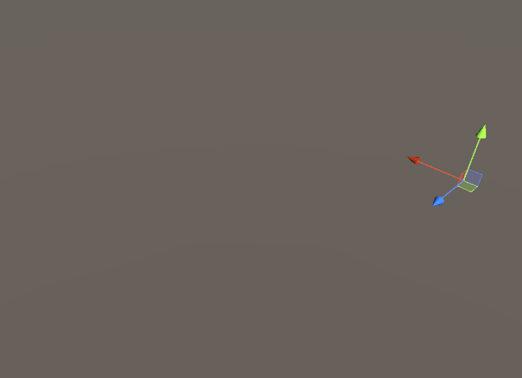

Editing Grids
A GridPlacer component is required to edit the voxel grid - make sure one is added to your game object.
Select an object with a GridPlacer component and press U to start the editor tool. The tool acts the same way as the native Unity tools like Translate, Rotate, and Scale in that you can only have one tool active at a time.
Note
By default, the tool is activated by pressing U. This can be configured in Unity's shortcut manager.
Selecting a different tool (e.g. by pressing W) will shut down the voxel editor tool and trigger a placement of the tiles.
If pressing U does not open the tool, check again to make sure the selected object has a GridPlacer component and that your properties inspector window is not locked to another object.
Basic Editing
When in edit mode, left click on a pink or purple square to add a tile to the clicked face. Hold control and left click on a pink tile to remove a tile. Attempting to remove a purple border square will do nothing.

The Unity-native right click camera controls are unchanged and can be used normally.